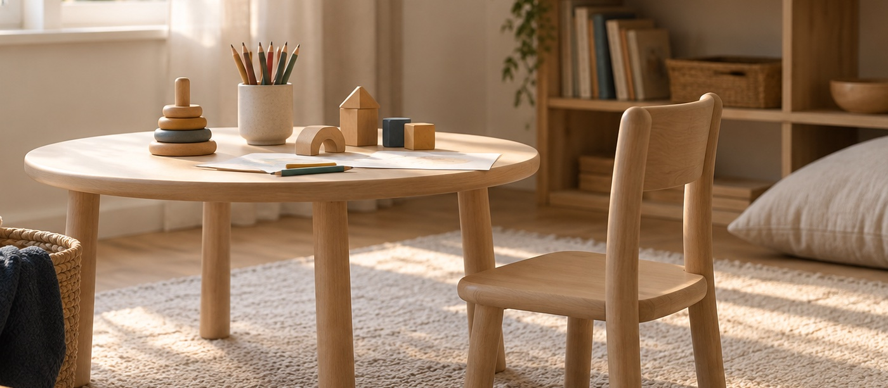
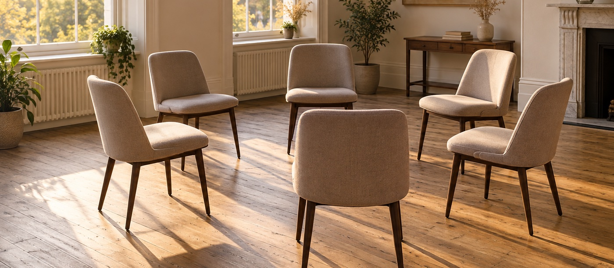

Ver todas as especialidades
A lista completa do que eu atendo, com a explicação de cada uma.
Ver especialidadesSou Rodrigo Vasconcellos, psicólogo clínico com 17 anos de consultório em Florianópolis. Atendo presencialmente nos Ingleses e no Santa Mônica, e também online.
Presencial e online · Sem compromisso · Sigilo garantido
Sou psicólogo clínico e atendo em Florianópolis há 17 anos. Trabalho com Gestalt-terapia, uma abordagem que olha menos para o rótulo do problema e mais para como você vive o que está acontecendo, aqui e agora.
Na prática, isso quer dizer que a terapia não começa com um diagnóstico e um plano pronto. Começa com você contando o que está acontecendo, do seu jeito, e nós dois entendendo juntos o que faz sentido fazer a partir daí.
Rodrigo Vasconcellos · Psicólogo Clínico · CRP 12/07128
Conhecer o RodrigoTudo abaixo é oferecido presencialmente nos Ingleses ou no Santa Mônica, e quase tudo também online, de qualquer lugar do Brasil.
Atendimento para adultos que estão lidando com ansiedade, tristeza, estresse ou questões de autoconhecimento.
Saiba maisEspaço para conflitos frequentes, dificuldade de comunicação e sofrimento nas relações afetivas.
Saiba maisQuando o que dói não é de uma pessoa só, mas da convivência entre quem mora junto.
Saiba mais
Atendimento de crianças, com orientação aos pais ao longo do acompanhamento.
Saiba mais
Grupo voltado ao manejo dos transtornos de ansiedade, com encontros regulares.
Saiba maisSessões por vídeo, com o mesmo cuidado do presencial, de onde você estiver.
Saiba maisInvestigação de atenção, memória e aprendizagem, com devolutiva em linguagem comum.
Saiba maisAtendimento em casa ou em instituição, para quem não consegue se deslocar até o consultório.
Saiba maisMe conta em uma linha o que está acontecendo. Eu te digo se a psicoterapia é o caminho e por onde começar.
Falar no WhatsAppCada pessoa chega com uma história própria. Estas são as dificuldades que mais acompanho em consultório.
A mente não desacelera, a preocupação não passa e o corpo fica em alerta o dia inteiro.
Saiba maisOs dias ficaram mais difíceis e o que antes fazia sentido perdeu a graça.
Saiba maisCrises intensas de medo que aparecem do nada, mesmo sem perigo real por perto.
Saiba maisDuvidar da própria capacidade, se cobrar demais e comparar-se o tempo todo.
Saiba maisConflitos que se repetem, ciúmes, dependência e dificuldade de pôr limites.
Saiba maisManter o foco, organizar tarefas e terminar o que começou exige um esforço enorme.
Saiba maisExaustão que não passa com o fim de semana, irritação e sensação de estar no limite.
Saiba maisNão é preciso estar sofrendo para fazer terapia. Toda terapia é uma busca de se conhecer.
Saiba maisA lista completa do que eu atendo, com a explicação de cada uma.
Ver especialidadesConte em uma linha o que está acontecendo. Não precisa saber explicar direito.
Alinhamos horário, unidade — Ingleses, Santa Mônica ou online — e valor.
Uma conversa para entender o que te trouxe aqui e decidir juntos o que vem depois.
O valor da sessão é combinado no primeiro contato, pelo WhatsApp, antes de qualquer agendamento. Sem surpresa e sem compromisso.
Do primeiro contato à última sessão, você fala sempre com o mesmo profissional.
Universidade do Sul de Santa Catarina (UNISUL)
2007
Universidade Federal de Santa Catarina (UFSC)
2009
Instituto Muller-Granzotto
Especialista em Psicologia Clínica · CRP 12/07128
FOTO: a sala de atendimento do consultório dos Ingleses, sem pessoas, tirada na diagonal.
Horários combinados pelo WhatsApp.
Agendar nos InglesesFOTO: a sala de atendimento do consultório do Santa Mônica, sem pessoas, tirada na diagonal.
Horários combinados pelo WhatsApp.
Agendar no Santa MônicaAtendo pacientes dos Ingleses, Canasvieiras, Rio Vermelho, Daniela, Jurerê e Jurerê Internacional, Ponta das Canas, Cachoeira do Bom Jesus, Santinho, Vargem Grande e do norte da ilha em geral; e também do Santa Mônica, Córrego Grande, Trindade, Itacorubi, Pantanal, Lagoa da Conceição, Campeche, Agronômica, Centro, Estreito, São José e Palhoça.
São 11 opiniões verificadas no perfil profissional. Abaixo, três delas, com as palavras de quem escreveu — o […] indica um trecho encurtado.
Me trato com ele a Anos, o que falar dele? não tem palavras. Simplesmente não posso larga-lo, só tenho a agradecer. […]
Seu profissionalismo e total atenção e cuidado com que ele tem com a gente. Obrigado por tudo!!!!
Ele é muito atencioso, nos ajuda a refletir, muito bom. Eu me trato com ele faz 3 anos. Ele me ajudou e muito.
É uma conversa. Você conta o que está acontecendo, do jeito que conseguir, e eu faço perguntas para entender melhor. No fim, combinamos se faz sentido continuar e com que frequência.
A sessão dura em torno de 50 minutos. A frequência mais comum é semanal, mas isso é combinado caso a caso.
O valor é informado no primeiro contato pelo WhatsApp, antes de qualquer agendamento. Perguntar não compromete você a nada.
Me pergunte no WhatsApp antes de agendar. Assim eu respondo de acordo com o seu plano, em vez de dar uma resposta genérica aqui.
Funciona, e para muita gente é o que torna a terapia possível. O atendimento é o mesmo; o que muda é o meio. Você só precisa de internet e de um lugar onde possa falar à vontade.
Sim. Atendo psicoterapia infantil, com orientação aos pais, e acompanho adolescentes.
Sim. O sigilo é uma obrigação ética da profissão, prevista no Código de Ética Profissional do Psicólogo, e vale tanto no presencial quanto no online.
Você não precisa chegar com tudo explicado. Uma mensagem já é começo.
Sem compromisso · Sigilo garantido
Este canal não atende emergências. Se você está em crise, ligue 188 (CVV, 24 horas) ou 192 (SAMU).